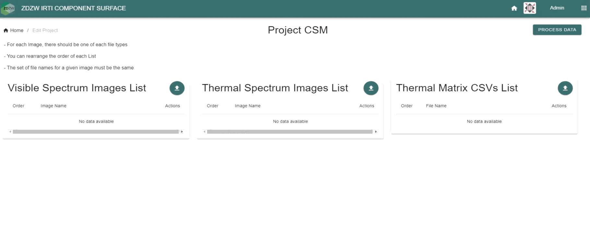

Thermal Inspection for Component Surface Monitoring
General Description
IR Thermal Imaging Inspection for Component Surface Monitoring (IRTI-CSM) is an application that can analyze the state of induction motors based on thermal information and images of the visible spectrum. To do this, an automatic inspection has been designed that emulates the procedure carried out by experts in thermographic analysis. The application has the following modules:
- Qualitative inspection by displaying images of motors in the thermal spectrum and the visual spectrum.
- Induction motor segmentation module.
- Content-based image retrieval module to return images of the most similar healthy motors.
- Rules-based classification module based on temperature information only present in the pixels identified as motors in both the motor to be analyzed and in similar motors.
In the developed zApp it is possible to analyze a batch of samples and at the end it is possible to generate a report with the classification made for each motor (healthy or defective), being able to visualize which rules have been fulfilled and which rules have not been fulfilled in the classifier.
Top Ten Functionalities
-
Surface quality inspection from Thermal images: This functionality allows to load one or multiple thermal images for visualization and to perform a first preliminary evaluation.
-
Preprocess acquired Thermal Images for noise reduction: This functionality allows to reduce the noise in the thermal images for their subsequent analysis by means of artificial intelligence from a preprocessing of the images.
-
Model Training with Thermal images databases This functionality is based on the training of the automatic classification module. To do this, it is necessary to design and train three submodules: a segmentation model, a content-based image retrieval model and a rule-based classifier. This module is only fed images from healthy motors.
-
Use the trained model to infer from images acquired on production line This functionality consists of executing the inference of the classification module on new samples where there are healthy motors and faulty motors. With the classifications made by the model, its performance is evaluated in the detection and classification of faulty motors based on their temperatures.
-
Provide high-speed and low latency quality feedback This functionality is based on the analysis of inference times by the model. In case these inference times are too long, the model should be optimized to improve the prediction speed without compromising the prediction performance.
-
Generate output data for anomaly detection purposes (classification, localization) This functionality is used to analyze the outputs returned by the model. Thus, not only is the classification according to the rules returned, but also the healthy motors with which the new motor's samples have been compared. Likewise, the output of each rule is also returned, making it possible to evaluate and understand the cause of the model's performance.
-
2D visualization of Thermal image defects This functionality consists of displaying the defects detected by the model. To do this, a display is made of the engine temperatures once the mask has been applied, making it possible to locate where the areas with the highest temperature are.
-
Obtain metrics to evaluate the inference accuracy of the model This functionality is based on the evaluation of model performance. To this end, objective metrics must be established to ensure that the model performance is good enough in the test set to be extrapolated to new motor’s samples.
-
Reconsider if the model must be retrained to fine-tune This functionality is based on the analysis of the predictions obtained. Thus, in case the model is not performing as expected, it is necessary to apply a retraining with new images to adjust it to the new samples to be predicted.
-
Optimize the process for on-edge retraining This functionality refers to the retraining optimization process. For this purpose, if retraining is necessary, an optimized methodology must be established to make such retraining efficient.
Architecture Diagram
The high-level diagram of the IR Thermal Imaging Inspector architecture is depicted below.

The solution consists of the following components:
-
Input Data: Data to be analyzed. It consists of the images obtained by the thermal imaging camera of the visible spectrum (.jpeg), the images of the thermal spectrum (.jpeg) and the temperature matrices (.csv).
-
GUI: This is the graphic interface with which the user interacts. It is where all the requests to the thermal inspector module are made, which returns the responses to the requests received.
-
IR Thermal Inspector: This is the main module of the application's backend. It manages requests to the other modules in order to be able to display user requests in the different tabs of the application.
-
Processing modules: These are the modules where processes that do not involve artificial intelligence are carried out. These processes are the visualization of the images in the visible and thermal spectrum, the filtering of the temperatures according to the engine masks and the report that is generated with the classification information.
-
AI modules: These are the modules that involve the use of artificial intelligence. In this section of modules are the segmentation module, the content-based image retrieval module and the rule-based classifier module.
-
Storage: It is where the weights of the artificial intelligence models, the images, masks and embeddings used in content-based image retrieval and the classification and new predictions that are generated are stored.
Image Overview

The typical workflow is shown in the image sequence of the image overview. First the images of the visible spectrum, the images of the thermal spectrum and the temperature matrices are loaded. Then you go to the tab where the pairs of images in both spectra are displayed. Next, you go to the content-based image retrieval display, where you can analyze the similarity metrics and the images of engines returned (the most similar and the most similar of the same month). Finally, in the last tab it is possible to see the segmentation of temperatures performed by the segmentation module and the classification performed by the classification module.
Hardware Components
Edge processing unit based on GPUs: AI inference optimized on available GPU hardware with 100% high-rate inspection.
Computation Requirements
- Classification of images to detect defects can rely on cloud services
- Possibility to store acquired data locally or in shared/cloud space
- Having in mind the computational needs of the trainig and inference phase of the AI services we recommended GPU with RAM 24 GB
Installation Procedure
The instructions for installing the app will be defined once the application has been completed.
How To Use
The instructions for using the app will be defined once the application has been completed.
Additional Learning Materials
Links to other learning materials like youtube tutorials will be added once the application has been completed.